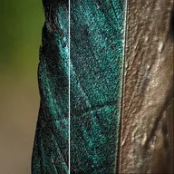

Bumpmap

Belicht de laag alsof de helderheid een verhoogd oppervlak is, voor een reliëf- en textuurlook die de kleuren behoudt.
Instellingen
| Instelling | Type | Bereik | Standaard |
|---|---|---|---|
| Lichthoek | Hoek | -3600° tot 3600° | 135° |
| Hoogte | Getal | 0 tot 30 | 4 |
| Omgevingslicht | Getal | 0 tot 1 | 0.4 |
| Glans | Getal | 0 tot 1 | 0.3 |
| Lichtkleur | Kleur | – | #FFFFFF |